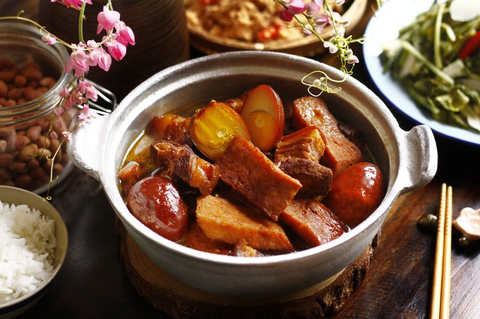

Thịt kho trứng là món ăn truyền thống của người Việt Nam, vào dịp tết hoặc đám giỗ thì chúng ta thường thấy món ăn này, mang hương vị rất ngon. Nguyên liệu chính gồm thịt ba chỉ, trứng gà hoặc trứng vịt, nước dừa, nước mắm, đường, hành và tỏi.
Món ăn có hương vị đậm đà, thơm ngon với thịt mềm, trứng béo và nước kho có màu vàng nâu đẹp mắt. Thịt kho trứng thường được ăn cùng cơm trắng và dưa cải để tăng thêm hương vị.
